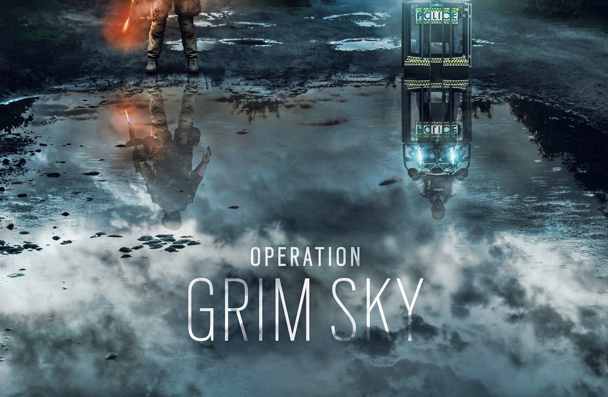

Modes
What are "modes" and what are they?

At launch, the game featured 11 maps and 5 different gameplay modes spanning both PVE and PVP. With the downloadable content (DLC) released post-launch with an additional four maps from year one and three maps from year two – there are currently 20 playable maps. The gameplay modes featured include:
| Gameplay Modes | Details |
|---|---|
| Hostage | Hostage is a competitive multiplayer mode, in which the attackers must extract the hostage from the defenders, while the defenders must prevent that from happening either by eliminating all of the attacking team or successfully defending the hostage until the time expires. A secondary manner of winning can occur if the attacking or defending team accidentally damages the hostage, causing the hostage to "down"; if the opposing team can prevent the revival of the hostage, and the hostage bleeds-out and dies, they will win the round. |
| Bomb | Bomb a competitive multiplayer mode, in which the attackers are tasked with locating and defusing one of two bombs. The defenders must stop the attackers by killing all of them or destroying the defuser. If all attackers are killed after the defuser is planted, the defuser must still be destroyed for a defending victory. |
| Secure area | Secure Area is a competitive multiplayer mode, in which the defenders must protect a room with a biohazard container, while the attackers must fight their way in and secure it. The match ends when all players from one team are killed or the biohazard container is secured by the attackers when there are no defenders in the room. |
| Tactical Realism | Tactical Realism is a variation of the standard competitive multiplayer modes, added with the release of the Operation Skull Rain DLC. The game mode features a heavier emphasis on realism and teamwork, removing most of the heads-up display (HUD) elements, the ability to mark opponents, and the ability to see teammates' contours through walls, while also featuring the addition of a realistic ammo management system. This mode is no longer in the game but some aspects are in the other multiplayer modes. |
| Terrorist Hunt | Terrorist Hunt is a solo or cooperative multiplayer mode for up to five players. Players take on the role of either attackers or defenders, and must fight against waves of enemies controlled by artificial intelligence across various modes like Bomb, Hostage or Elimination (Terrorist hunt classic). |
| Situations | Situations is the game's most significant single-player component, with 10 solo and 1 co-op multiplayer missions that serve as introductory and interactive tutorials to the game's mechanics. |
| Outbreak | A limited time event exclusive to Operation Chimera, Outbreak pits a 3 player team in a co-op PVE environment against an extraterrestrial biohazard threat, namely AI-controlled heavily mutated forms of humans infected with said alien parasite. Two difficulties exists for this mode, for which the chief difference was the inclusion of friendly fire on the harder one. |